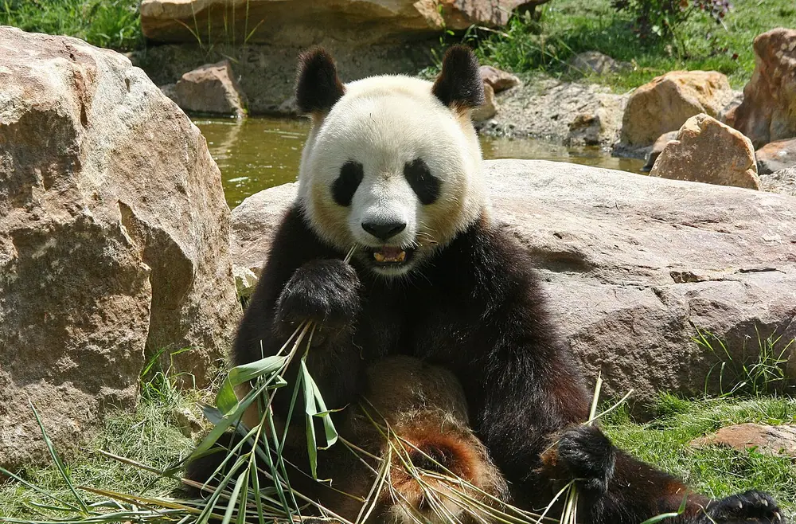
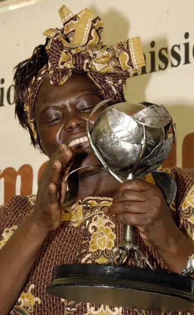

Afrikanischer Savannenelefant
Der Savannenelefant lebt in Afrika und ist das größte Tier an Land.
Kurz erklärt
Was steckt im Rüssel?
Nase und Oberlippe bilden zusammen den Rüssel. Darin gibt es keine Knochen, nur Muskeln.
Wozu die großen Ohren?
Seine großen, dünnen Ohren helfen ihm, sich abzukühlen.
Rate mal!
Was kann ein Elefant mit seinem Rüssel tun?
Stimmt das?
Bei Savannenelefanten haben auch die Weibchen Stoßzähne.
Steckbrief
- Wie groß?
- An der Schulter etwa 2,5 bis 4 Meter hoch.
- Was frisst es?
- Gras, Blätter, Zweige, Früchte und Rinde.
- Wie alt?
- Etwa 60 bis 70 Jahre.
- Tiergruppe
- Säugetiere
Dazu passt

Großer PandaDer Elefant greift Nahrung mit seinem Rüssel. Der Panda nutzt dafür einen besonderen Knochen an seinem Handgelenk.
Karte öffnen
Wangari MaathaiMaathai setzte sich in Kenia für Bäume ein, und dort leben auch Savannenelefanten in offenen Landschaften.
Karte öffnen